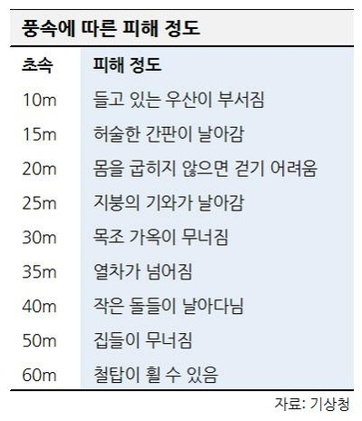

태풍 폭풍
바람이 강해질 것 같은 날은 기상 정보를 확인하고, 바람의 강도에 따라서는 외출을 하지 않고 실내에 머물도록 합시다.
바람이 강해질 것 같은 날은 기상 정보를 확인하고, 바람의 강도에 따라서는 외출을 하지 않고 실내에 머물도록 합시다.
기상청은 태풍의 대략적인 세력을 나타내는 기준으로 아래 표와 같이 풍속(10분간 평균)을 바탕으로 태풍의 '힘'을 표현합니다. 「강도」는 최대 풍속으로 구분하고 있습니다.
태풍이나 발달한 저기압의 주변에서, 평균 풍속이 15m/s 이상의 바람이 불고 있거나, 지형의 영향 등이 없는 경우에, 불 가능성이 있는 영역. 일반적으로 그 범위는 원으로 표시됩니다.
태풍 주변에서 평균 풍속이 25m/s 이상인 바람이 불고 있거나 지형의 영향 등이 없는 경우에 불 가능성이 있는 영역. 일반적으로 그 범위는 원으로 표시됩니다.